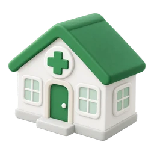
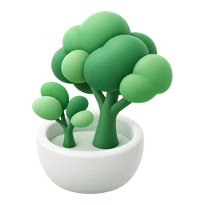
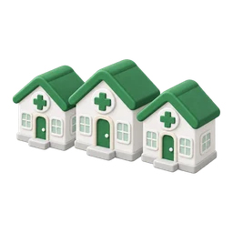
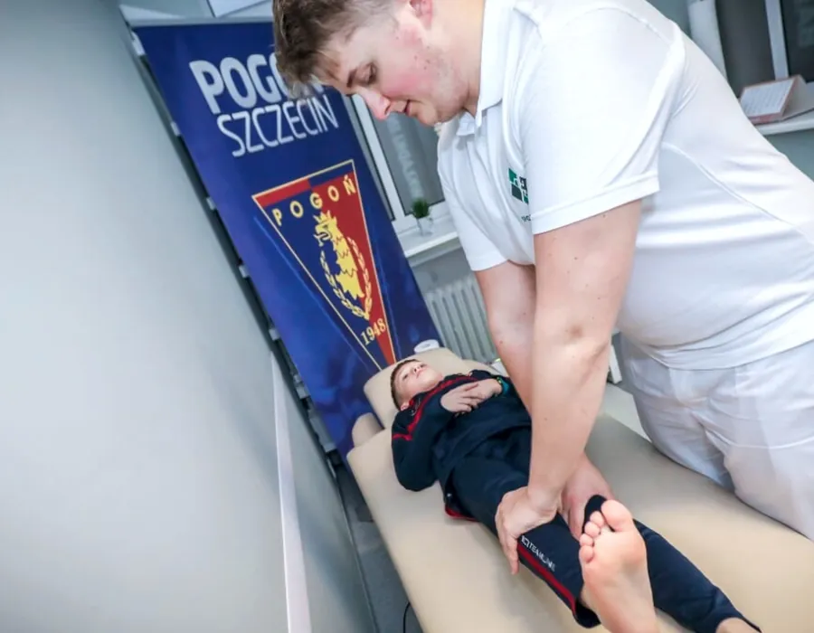
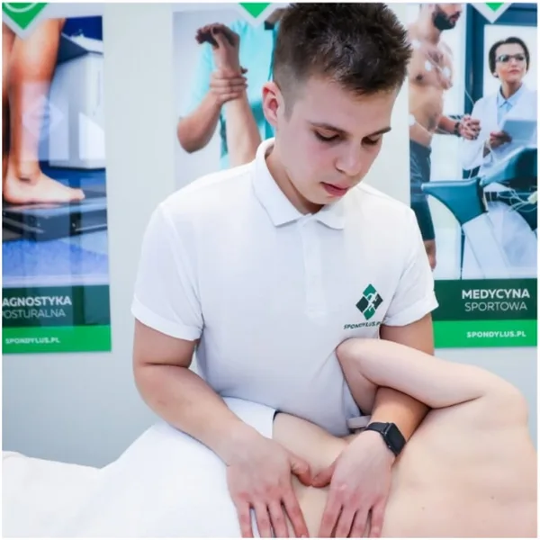
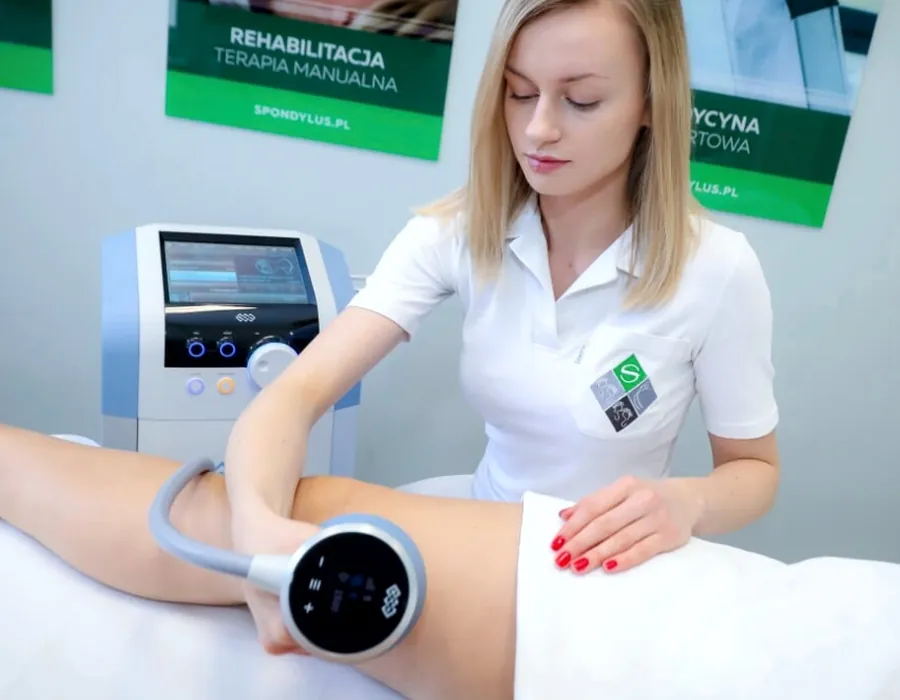
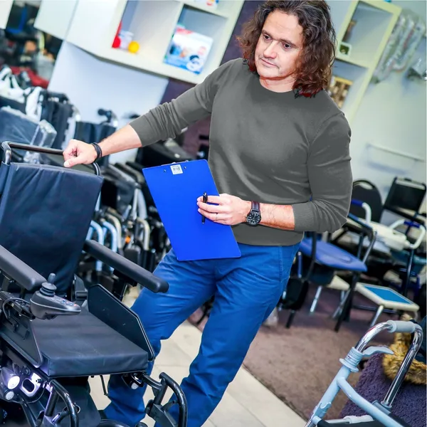
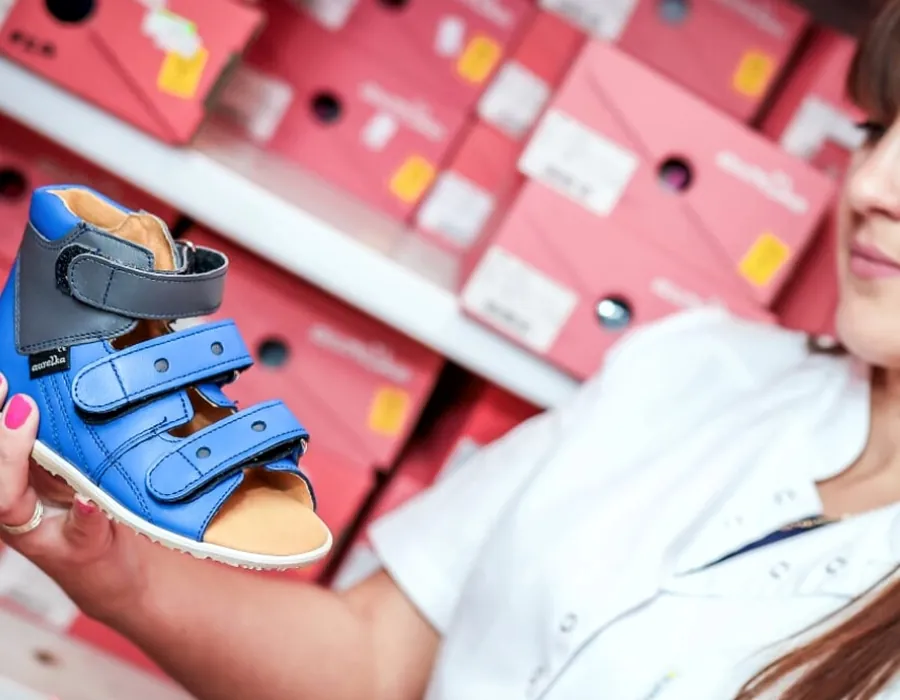
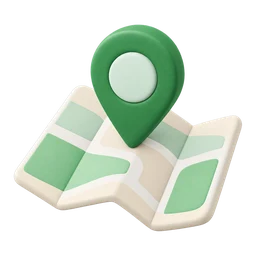

Rodzinne centrum medyczne od 1989 roku
Jesteśmy zespołem specjalistów, dla których najważniejsze jest kompleksowe rozwiązanie problemu pacjenta. Zaczynaliśmy w Szczecinie, od 2005 roku jesteśmy też w Koszalinie.


37 latopieki nad pacjentami, od 1989 roku 25 000+dzieci przebadanych w programie „Zdrowa Nóżka i Kręgosłup”
25 000+dzieci przebadanych w programie „Zdrowa Nóżka i Kręgosłup”
3 placówkiw Szczecinie i Koszalinie, jedna infolinia 665 035 035Wszystko, czego potrzebujesz, pod jednym dachem
Łączymy zaopatrzenie medyczne z refundacją NFZ, diagnostykę wad postawy, rehabilitację i fizjoterapię, medycynę sportową oraz terapię estetyczną. Uzupełniają je konsultacje lekarzy specjalistów.
Nasi specjaliści stale się szkolą, a w pracy z pacjentem stawiają na indywidualne podejście do każdego problemu. Pracujemy na nowoczesnym sprzęcie medycznym.
 Rehabilitacja i fizjoterapiaOrtopedyczna, pooperacyjna i neurologiczna
Rehabilitacja i fizjoterapiaOrtopedyczna, pooperacyjna i neurologiczna Diagnostyka wad postawyPostawa, stopy i diagnostyka sportowa
Diagnostyka wad postawyPostawa, stopy i diagnostyka sportowa Medycyna sportowaKontuzje i powrót do treningu
Medycyna sportowaKontuzje i powrót do treningu Konsultacje lekarskieOrtopeda, neurolog, neurochirurg
Konsultacje lekarskieOrtopeda, neurolog, neurochirurg DietetykaKliniczna i sportowa, wsparcie terapii
DietetykaKliniczna i sportowa, wsparcie terapii Medycyna estetycznaZabiegi pod opieką zespołu medycznego
Medycyna estetycznaZabiegi pod opieką zespołu medycznego Zaopatrzenie medyczneWkładki, obuwie i sprzęt, także z NFZ
Zaopatrzenie medyczneWkładki, obuwie i sprzęt, także z NFZ
Z życia naszych placówek
Gabinety fizjoterapii, medycyna sportowa i zaopatrzenie medyczne. Tak wygląda u nas zwykły dzień.





Jak rośliśmy
Od jednego gabinetu dr. Ryszarda Wetoszki do trzech placówek w Szczecinie i Koszalinie.
- 1989Dr Ryszard Wetoszka zakłada Zakład Usług Medycznych
- 1997Dołącza syn założyciela, Wojciech Wetoszka

2005Otwieramy oddział w Koszalinie- 2011Startuje program „Zdrowa Nóżka i Kręgosłup”
- 2018Dołączamy medycynę sportową
- 2020Powstaje dział terapii estetycznej
- DziśTrzy placówki i jedna infolinia
Spondylus to z greki pojedynczy kręg kręgosłupa
Albo egzotyczna muszla. Skojarzenie starożytnych jest trafne: kostny kręg ma liczne wyrostki, które upodabniają go do muszli. Od tego słowa zaczęła się nasza historia.
Jak pracujemy
Te zasady łączą wszystkie nasze placówki, od Szczecina po Koszalin.
 Kompleksowo
KompleksowoSzukamy rozwiązania całego problemu. Fizjoterapeuta i lekarz mogą wspólnie zająć się jednym pacjentem.
 Indywidualnie
IndywidualnieKażdy problem traktujemy osobno, a plan terapii układamy pod konkretną osobę.
- Stałe szkolenia
Nasi specjaliści stale poszerzają wiedzę na szkoleniach specjalistycznych.
 Nowoczesny sprzęt
Nowoczesny sprzętPracujemy na nowoczesnej aparaturze medycznej, także w diagnostyce wad postawy.
Ludzie Spondylus
Fizjoterapeuci i lekarze, którzy przy trudniejszych przypadkach konsultują pacjenta wspólnie.
 Tomasz GnusFizjoterapeuta
Tomasz GnusFizjoterapeuta Magdalena SałabonFizjoterapeutka dzieci
Magdalena SałabonFizjoterapeutka dzieci Gabriela MajorczykFizjoterapeutka
Gabriela MajorczykFizjoterapeutka Tomasz ZdebFizjoterapeuta
Tomasz ZdebFizjoterapeuta Piotr SałapaNeurochirurg
Piotr SałapaNeurochirurg Tomasz DudzikNeurolog
Tomasz DudzikNeurolog
Umów wizytę w dogodnej placówce
Wybierz placówkę i wolny termin w kalendarzu online. Wolisz rozmowę? Zadzwoń na infolinię.